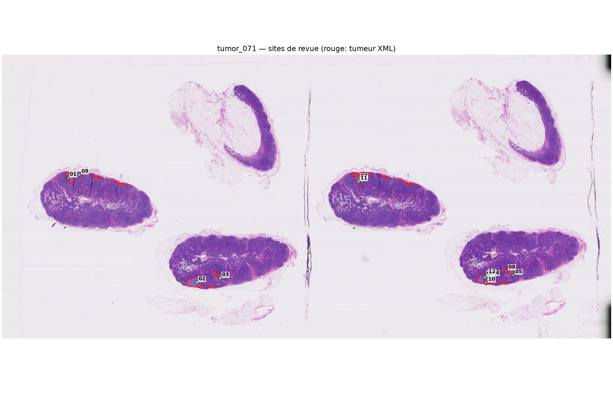
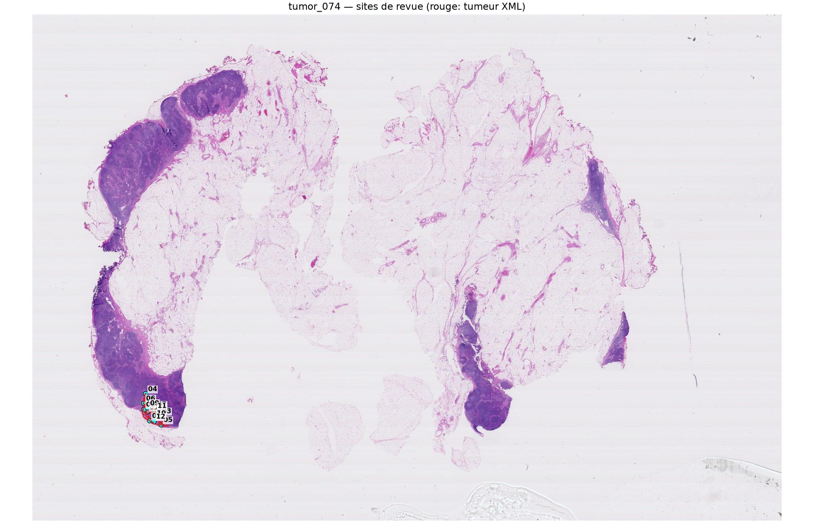
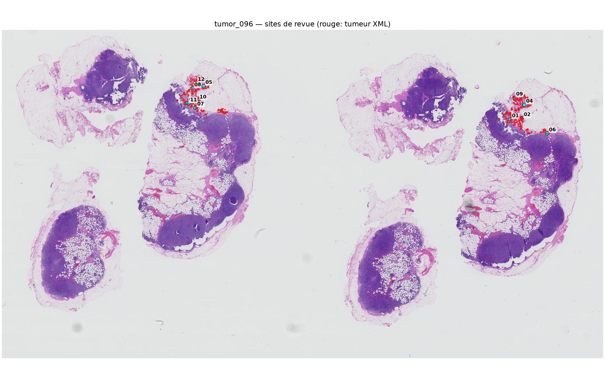

Données de validation. Ce pack sert au diagnostic et à la conception de l’expérience suivante. Aucun patch présenté ici ne doit être ajouté à l’entraînement.
Pour chaque site, examiner le contexte, le zoom et le patch exact. Les réponses sont conservées localement dans ce navigateur. Utiliser « Exporter le CSV » à la fin.
tumor_071

tumor_074

tumor_096
